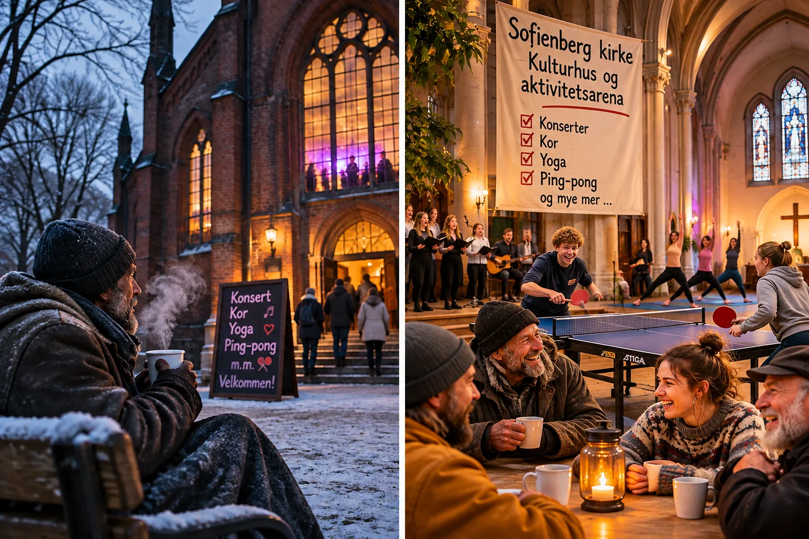
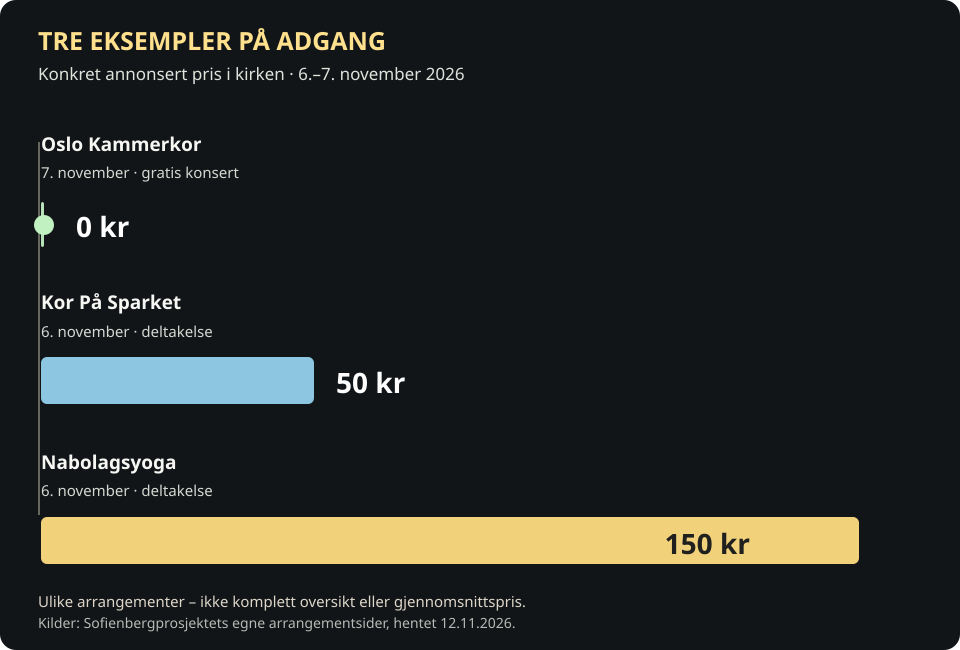
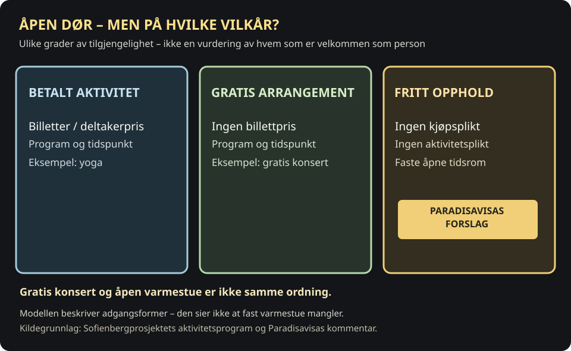
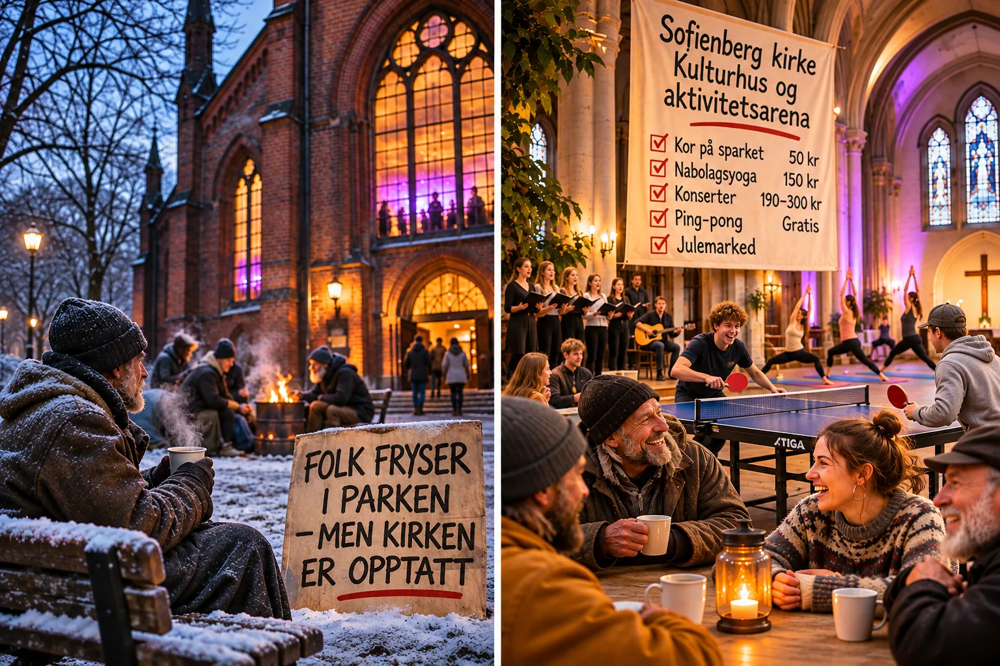

Sofienberg kirke er varm. Folk fryser utenfor.
For ett år siden foreslo Paradisavisa å åpne Sofienberg kirke som varmestue for dem som oppholder seg i parken. Nå inviteres det til konserter, yoga, kor og bordtennis. Men hvor er rommet for dem som bare trenger et sted å være?

Redaksjonell oppdatering 12. november: Sofienbergprosjektets kalender bekrefter at en del arrangementer er gratis, mens andre har deltakerpris. Prosjektet har også hatt åpne aktiviteter, blant annet gratis ungdomstiltak. Vi har ikke fått dokumentert faste, offentlig annonserte åpningstider for et uorganisert innendørs oppholdsrom for voksne denne vinteren. Fravær av slik informasjon er ikke bevis for at tilbudet ikke finnes. Vi har ikke innhentet nye svar fra prosjektledelsen. Prosjektets oppdaterte kalender · Samarbeidspart om åpne tilbud og piloten.
Det er november i Sofienbergparken. Om sommeren er parken et rom alle kan bruke uten billett, påmelding eller kjøpsplikt. Når temperaturen faller, blir det annerledes. Hvor går man for å varme seg dersom man ikke har penger til å sitte på kafé – eller ikke har noe organisert fritidstilbud å delta i?
Sofienberg kirke står midt i denne parken. I dag drives den gjennom Sofienbergprosjektet, med en uttalt ambisjon om å bli en åpen møteplass og kulturarena særlig for barn og unge.
Prosjektet fikk i 2024 en tildeling på 23,175 millioner kroner fra Sparebankstiftelsen DNB til infrastruktur, utstyr, prosjektering, koordinering og følgeforskning. Satsingen har bidratt til at kirken tas i bruk på nye måter. Men det er fremdeles grunn til å spørre: Hvem er bygget egentlig åpent for?
Kor, yoga, konserter – og ping-pong
Programmet denne høsten er variert. Fredag 6. november ble «Kor På Sparket» annonsert, en times fellessang uten krav til erfaring. Deltakerprisen er 50 kroner. Samme dag var nabolagsyoga annonsert til 150 kroner. Torsdag 5. november sto musikkforestillingen «Elva Under Elva» på programmet, og lørdag 7. november holdt Oslo Kammerkor en gratis konsert med norsk tradisjonsmusikk.
Dette er ikke bare kristen pop, men et bredt spekter av musikk, scenekunst og aktiviteter. Prosjektet har også arbeidet med bordtennis, åpne ungdomsaktiviteter og andre møteplasser. Flere arrangementer er gratis. Det er viktig å få fram.
Men det er en forskjell mellom å være invitert til en bestemt aktivitet og å ha rett til å gå inn, sette seg ned og være i fred.
Tre arrangementer – tre forskjellige priser


Vis de tre prisene som tabell
| Arrangement | Dato | Pris |
|---|---|---|
| Oslo Kammerkor | 7. november | 0 kr |
| Kor På Sparket | 6. november | 50 kr |
| Nabolagsyoga | 6. november | 150 kr |
Vi har bygget en by der det ofte koster penger å sitte inne, men er gratis å fryse ute.
Det er dette skillet Paradisavisa mener må diskuteres.
Gratis arrangement er ikke det samme som fri oppholdstid


De som allerede har parken som møtested
I Sofienbergparken finnes et etablert sosialt miljø av mennesker som møtes, prater og tilbringer store deler av dagen der. For noen er parken en viktig del av hverdagen. Andre er i en mer utsatt livssituasjon og har få andre steder å oppholde seg.
Disse menneskene trenger ikke nødvendigvis enda et kurs. De trenger kanskje bare varme, stoler, toalett og et sted de får sitte uten å måtte kjøpe noe eller fylle en rolle.
I Norge finnes biblioteker og ulike åpne møteplasser, men få steder der voksne kan oppholde seg gratis og uorganisert i mange timer, også på kveldstid. En offentlig park er åpen nettopp fordi man ikke må prestere eller betale for å være der. Om vinteren burde vi også ha innendørs rom som ivaretar noe av den funksjonen.
Har Sofienberg kirke ingen gratis møteplasser?
Jo, det er dokumentert gratis og åpne aktiviteter. Blant annet sto en gratis konsert på programmet 7. november 2026. Prosjektet har også arbeidet med ungdomsrettede tilbud og åpne aktiviteter. I 2025 arrangerte Byantropologene blant annet «Åpen torsdag» etter skoletid for ungdom.
Paradisavisas spørsmål gjelder noe smalere: Er det annonsert faste tider for uorganisert, gratis og varmt opphold for voksne – også uten at de deltar i et arrangement? Vi har ikke dokumentasjon som gir et sikkert ja eller nei. Prosjektkalender · Byantropologene om satsingen.
Hvorfor ikke bruke skolene mer?
Oslo kommune har en ordning der frivillige organisasjoner som tilbyr aktiviteter for barn og unge, kan låne skolelokaler gratis etter skoletid når lokalene er tilgjengelige. Skolene er dermed en mulig arena for kor, teater, dans og andre organiserte aktiviteter.
Det betyr ikke at skolene kan erstatte alle ungdomstilbud, eller at ungdom ikke trenger et trygt sted å møtes. Det er heller ikke dokumentert at hvert enkelt lokale står tomt om kvelden. Men muligheten finnes og fortjener å bli vurdert når bruken av Sofienberg kirke skal prioriteres.
Det er ikke en kamp mot de unge. Det er et spørsmål om hvem som allerede har tilbud – og hvem som risikerer å stå utenfor.
Hva må en varmestue faktisk tilby?
Fire praktiske avklaringer som Paradisavisa foreslår. Ingen av dem beskriver en besluttet ordning.
Dette er et redaksjonelt forslag, ikke en beskrivelse av Sofienbergprosjektets driftsvedtak. Bakgrunn: prosjektets formål og organisering.
Snikprivatisering uten salg?
Sofienberg kirke er ikke solgt til en privat investor. Den er fortsatt del av den kirkelige eiendomsforvaltningen i Oslo. Kritikken av «snikprivatisering» gjelder derfor ikke formell overdragelse av eiendommen, men hvem som får bruke den i praksis.
Når adgang i økende grad knyttes til bestemte arrangementer, påmeldinger, organisasjoner og utleie, kan et rom oppleves mindre offentlig selv om eierskapet ikke endres.
Et åpent fellesskapsrom trenger ikke alltid ha et program. Det kan ha verdi nettopp fordi ingen krever at du deltar i noe.

Slik har kirken skiftet rolle
Åpne datoene for å se forskjellen mellom historien, den pågående satsingen og Paradisavisas forslag.
Kirken tas ut av vanlig menighetsbruk
Bygningen slutter å være i ordinær bruk som menighetskirke og brukes senere blant annet til utleie.
Prosjektet får 23,175 millioner kroner
Paulus og Sofienberg sokn får støtte fra Sparebankstiftelsen DNB til blant annet infrastruktur, utstyr, prosjektering, koordinering og følgeforskning.
Paradisavisa foreslår varmestue
I kommentaren «Kulturkirke for hvem?» foreslås mer åpen og gratis oppholdstid. Det er et redaksjonelt forslag, ikke en vedtatt ordning.
Dokumenterte gratis og betalte aktiviteter
Kor På Sparket har annonsert pris 50 kroner, nabolagsyoga 150 kroner, og Oslo Kammerkors konsert er gratis.
Spørsmålet om fri oppholdstid står åpent
Det finnes en offentlig aktivitetskalender, men vi har ikke dokumentert faste vinteråpningstider for uorganisert, gratis opphold for voksne. Prosjektet er ikke intervjuet til denne oppdateringen.
Kilder: Byantropologene, Sparebankstiftelsen, Paradisavisa 2025 og arrangementskalenderen.
Ett år etter forslaget om varmestue
Den 16. oktober 2025 publiserte Paradisavisa kommentaren «Kulturkirke for hvem?». Der foreslo Oslo Old Boys at kirken kunne brukes som varmestue om vinteren, og at området ved kirkemuren kunne åpnes bedre mot parken.
Ett år senere viser arrangementskalenderen et aktivt kulturhus, med både gratis og betalte aktiviteter. Men per 12. november har vi ikke funnet tydelig offentlig annonserte faste åpningstider for gratis, uorganisert opphold for voksne som bruker parken om vinteren. Det er ikke det samme som å fastslå at et slikt tilbud ikke finnes. Det bør prosjektet og menigheten få svare på.
På tide å åpne dørene
Paradisavisas forslag står ved lag: La Sofienberg kirke bli en varmestue og et gratis, åpent oppholdsrom på faste tider i vintermånedene. Konserter og kulturarrangementer kan fortsette – men de bør ikke være den eneste synlige inngangen til rommet.
Kommunen, Kirkelig fellesråd, menigheten og prosjektledelsen bør sammen undersøke hvordan en slik ordning kan bemannes og drives. Dersom dagens forvaltning ikke gir plass til det, bør endret bruk og forvaltning vurderes. Også spørsmål om offentlig overtakelse av nødvendige bruksrettigheter kan utredes, men ekspropriasjon vil kreve selvstendig lovgrunnlag og vurdering.
Spørsmålet er ikke om vi trenger flere konserter. Spørsmålet er om vi fortsatt har plass til mennesker som ikke skal kjøpe, prestere eller underholdes – men bare trenger et sted å være.
En park tilhører alle. Kirken midt i parken burde også kunne være åpen for dem som ikke står på gjestelisten.
Hvilket grep ville gjøre bygget mer tilgjengelig?
Frivillig leserspørsmål, ikke en representativ undersøkelse. Bare ditt eget svar lagres lokalt. Ingen fellestall eller prosenter vises.
Avstemningen krever JavaScript og sender ikke svaret til en server.
Du valgte:
Dette viser bare ditt eget svar.
Kilder og grunnlag
- Sofienbergprosjektet: arrangementsprogram og prosjektbeskrivelse.
- Kor På Sparket, 6. november 2026 – 50 kroner.
- Nabolagsyoga – 150 kroner.
- Sparebankstiftelsen DNB: tildeling på 23 175 000 kroner.
- Oslo kommune: lån og leie av skolelokaler.
- Sofienbergprosjektet: om prosjektet og ansvarlige.
- Paradisavisa: «Kulturkirke for hvem?» (16. oktober 2025).
- Sofienbergprosjektet: Oslo Kammerkor-konsert 7. november 2026, gratis.
- Byantropologene: kultur- og nabolagspilot 2024–2027.
Dette er en kommentar. De prinsipielle vurderingene og forslagene er Paradisavisas. Sofienbergprosjektet og menigheten er ikke sitert med svar på kritikken i denne teksten.